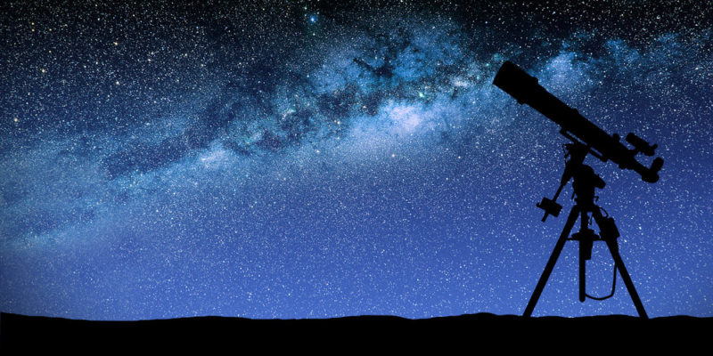

La Astronomia
¿Que es la astronomia?
Es la rama de la ciencia que estudia los astros

¿Que es la coheteria?
Es la creación de cohetes y maquinas que vuelen al espacio
La coheteria es una profesión y puede ser tambien un hobby a la vez
Esto puesto que se pueden fabricar pequeños cohetes a escala
Si quieres saber sobre los cohetes amateur puedes ir a la siguiente página
__Cohetes Amateur__
Si quieres saber sobre las comparaciones de las diferentes compañias
__Comparacion__
Si quieres saber sobre SpaceX visita aqui
__SpaceX__
Un pequeño video de la CREW DRAGON de Spacex:
__Video Crew Dragon SpaceX__
Si quieres saber sobre Blue Origin visita aqui
__Blue Origin__
Un pequeño video del NEW GLEEN de Blue Origin:
__Video NEW GLEEN Blue Origin__
Hecho Por: Juan Fonseca
Colegio El Carmen Teresiano Bogota